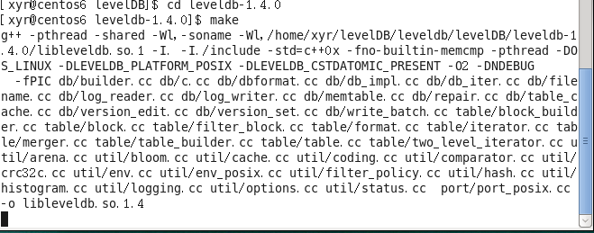
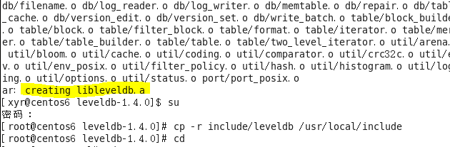
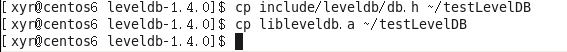
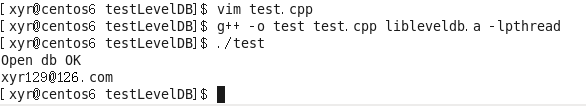
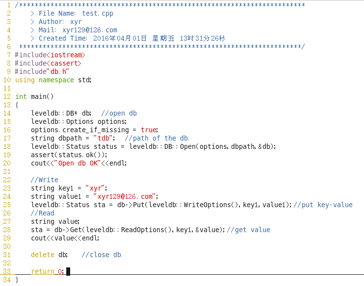

CentOS、leveldb-1.4.0
1、首先下载源码
2、解压缩文件
3、进入解压后的目录 cd leveldb-1.4.0
4、编译，一个make命令就可以（需要g++支持）

编译完成在解压后的目录里会生成一个libleveldb.a库文件

5、头文件准备：
切换到root用户；
用cp -r include/leveldb /usr/local/include命令。把./include/leveldb文件夹的内容都拷到/usr/local/include路径下
6、创建一个目录testLevelDB，把leveldb-1.4.0目录里的libleveldb.a、db.h拷到本程序的同一路径下
cp include/leveldb.h ~/testLevelDB cp libleveldb.a ~/testLevelDB

7、实例测试
一个LevelDB数据库需要有一个对应的文件系统目录名字，该数据库的所有内容都存储在这个目录下。
LevelDB的使用分三步:
（1)打开一个数据库实例；
（2)对这个数据库实例进行增(删)、改、查操作；
（3)关闭该数据库。

